📍 Shinjuku, Tokyo
Hotel Gracery Shinjuku
★ Godzilla · Iconic Tokyo Landmark
The most photographed hotel in Tokyo. A life-size Godzilla head erupts from the 8th floor terrace, gazing over the neon chaos of Kabukicho. The Godzilla View rooms put you eye-to-eye with the King of Monsters — a surreal, unforgettable experience that no otaku should miss.

📍 Fujiyoshida, Yamanashi
Highland Resort Hotel & Spa
★ Naruto · Official Collaboration Rooms
Sleep inside the Hidden Leaf Village. The official Naruto collaboration suites at Highland Resort are the most meticulously crafted anime rooms in Japan — from Hokage-themed walls to kunai-shaped room keys. Mount Fuji is your view. The ninja world is your bedroom.

📍 Awaji Island, Hyogo
Grand Chariot 135°
★ Naruto · Demon Slayer · Nijigen no Mori
On the mythical island of Awaji — birthplace of the Japanese gods — Grand Chariot offers the most luxurious anime stay in existence. Official Naruto villas recreate the Hokage's chambers in breathtaking detail. Just outside your door: Japan's premier anime theme park, Nijigen no Mori.
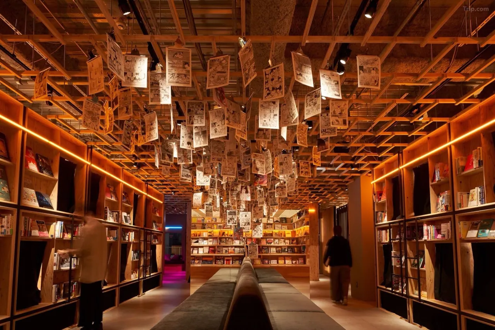
📍 Kabukicho, Shinjuku
Book and Bed Tokyo Shinjuku
★ 泊まれる本屋 · The Bookstore You Sleep In
Your bed is inside a bookshelf. Thousands of books — including a significant manga collection — surround you on all sides. There is a bar and a cafe. The WiFi password is "have a book night." Book and Bed Tokyo is the hostel concept that book lovers dreamed up, and it works exactly as described.

📍 Akasaka, Tokyo
Henn na Hotel Akasaka
★ Sci-Fi · World's First Robot-Staffed Hotel
An android looks up from the reception desk and greets you in four languages. This is the Henn na Hotel — the world's first hotel staffed entirely by robots, Guinness World Record holder, and the most convincing proof yet that the sci-fi anime future has arrived. Surreal, efficient, and unforgettable.

📍 Shima Onsen, Gunma
Sekizenkan Ryokan
★ Spirited Away · Real-Life Bathhouse Inspiration
Cross the red bridge at night and you are inside Spirited Away. Sekizenkan is Japan's oldest continuously operating ryokan — built in 1691 — and the direct visual inspiration for Yubaba's bathhouse. The lantern-lit corridors, steaming baths, and ancient wooden architecture make this the most sacred pilgrimage in all of anime tourism.
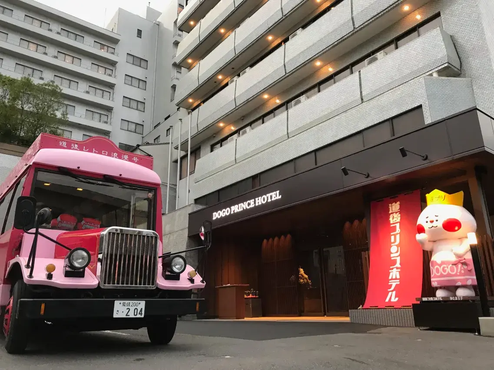
📍 Dogo Onsen, Matsuyama
Chaharu Ryokan
★ Spirited Away · Dogo Onsen Honkan · 2 Minutes Away
Two minutes from the Spirited Away bathhouse — and Dogo's finest ryokan. Chaharu's rooftop open-air bath is the first in Dogo Onsen, with unobstructed views of Matsuyama Castle under open sky. The Honkan glows across the arcade at dusk. This is where the pilgrimage stays.
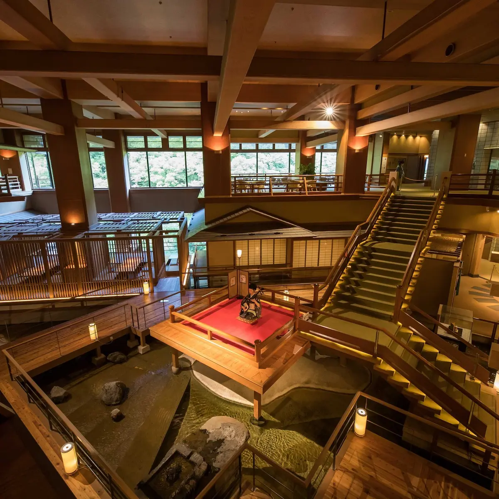
📍 Aizuwakamatsu, Fukushima
Ookawa-so (Infinity Castle)
★ Demon Slayer · Infinity Castle Inspiration
The ryokan that became the Infinity Castle. Ookawa-so's spectacular lobby — with its soaring ceilings, ornate wooden beams, and cascading staircases — directly inspired one of the most iconic locations in Demon Slayer. Standing inside it feels like stepping into the screen.

📍 Numazu, Shizuoka
Yasuda Ryokan
★ Love Live! Sunshine!! · Chika's Real Home
This is not inspired by Love Live — this is Love Live. Yasuda Ryokan is the real-world home of Chika Takami, the series' protagonist. The building, the garden, the view of Suruga Bay — all faithfully recreated in the anime. For fans of the franchise, staying here is a religious experience.
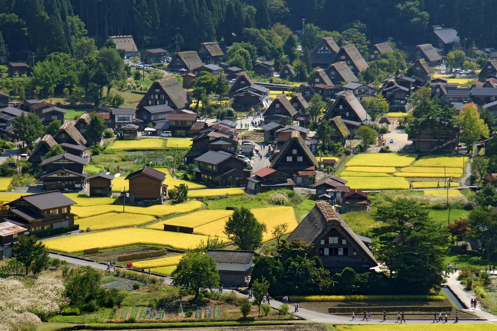
📍 Shirakawa-go, Gifu
Shiroyamakan
★ Higurashi When They Cry · Real Hinamizawa
Shirakawa-go is Hinamizawa — the haunted village at the heart of Higurashi When They Cry. Built in 1884 inside the UNESCO World Heritage gassho-zukuri village, Shiroyamakan accepts just four parties per night. Private cypress baths, kaiseki cuisine, and a complimentary village tour from the fourth-generation owner.

📍 Kanda, Tokyo
Manga Art Hotel Tokyo
★ 5,000+ Curated Manga Volumes
Sleep surrounded by manga. The walls, the corridors, the shelves beside your bed — all manga. Manga Art Hotel is not a hotel with manga; it is manga that happens to have beds. The curators have hand-selected every volume. You can borrow any title, disappear into your capsule, and read until the city wakes up.

📍 Jimbocho, Tokyo
Book Hotel Jimbocho · MANGA ART ROOM
★ Private Sauna · Reality Forbidden
On the 12th floor: two private manga caves — one white, one black — with floor-to-ceiling art panels, shelves of manga, and a private sauna called KUHAKU (blank space). The hotel's manifesto is direct: reality is strictly forbidden here.

📍 Shinsaibashi, Osaka
Quintessa Hotel Osaka Shinsaibashi
★ 8,000 Manga Volumes · Comic & Books
Eight thousand manga volumes fill the lobby — ONE PIECE, Demon Slayer, Doraemon, Detective Conan, and much more. Take up to ten volumes to your room at a time; return them, take ten more. Steps from Shinsaibashi Station, 15 minutes on foot from Dotonbori. Osaka's definitive manga base camp.

📍 Niigata City, Niigata
Niigata Daiichi Hotel
★ 15,000 Comics · Japan's Manga Capital
Niigata gave the world Rumiko Takahashi (Inuyasha), Takeshi Obata (Death Note), and ONE (One Punch Man). Its best hotel has 15,000 comics in a dedicated reading room, gender-segregated public baths, yukata for the whole hotel, and a teppanyaki breakfast. One block from the Shinkansen station.
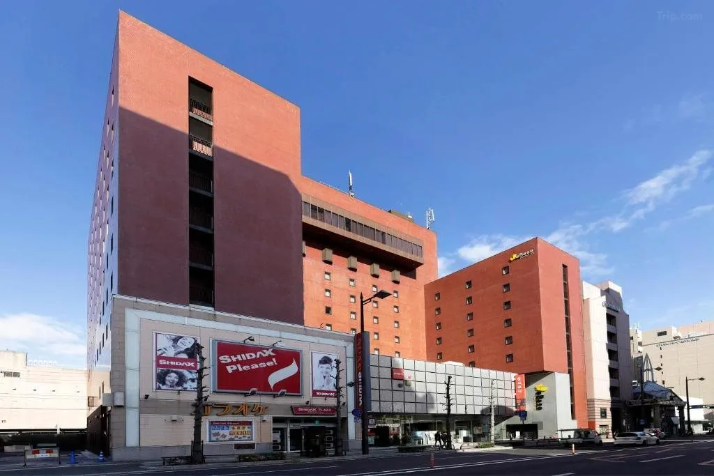
📍 Takamatsu, Kagawa
WeBase Takamatsu
★ Setouchi Art Islands · Naoshima Gateway
The smartest base for Setouchi Triennale island-hopping. Modern hostel-hotel hybrid with private rooms, a 116-seat coworking lounge, Sanuki Udon breakfast, and ferry access to Naoshima — home to the Chichu Art Museum, Benesse Art House, and some of the most significant contemporary art installations in Asia.
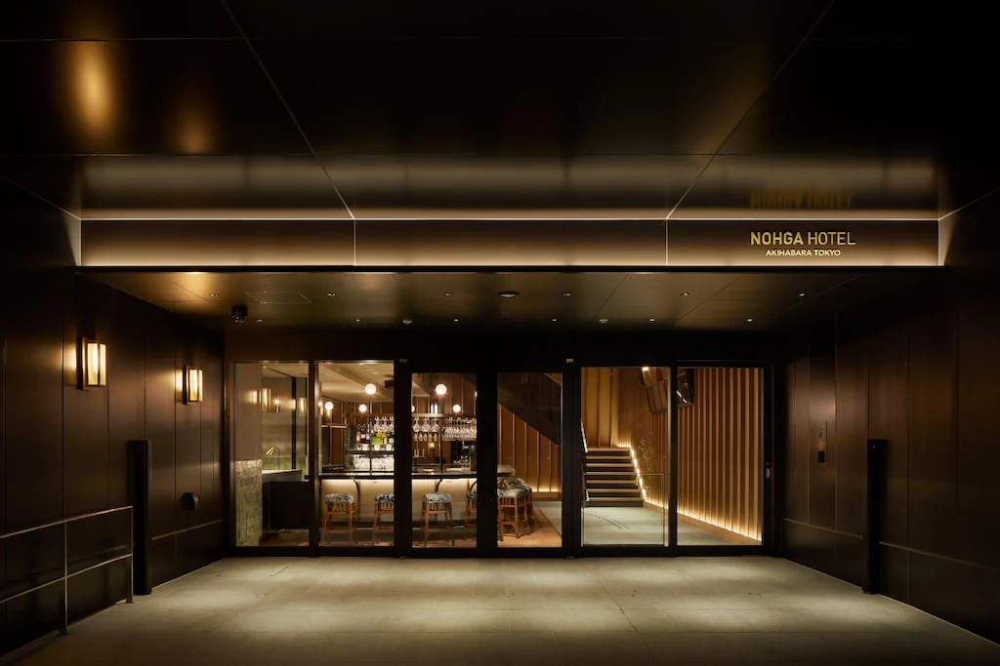
📍 Akihabara, Tokyo
Nohga Hotel Akihabara
★ Electric Town · Premium Akihabara Base
The most design-forward hotel in Akihabara. While other options in the district sacrifice aesthetics for location, Nohga delivers both — a beautifully designed boutique hotel with high-end audio systems in every room, steps from the world's greatest concentration of anime, manga, and gaming stores.

📍 Akihabara, Tokyo
Anshin Oyado Akihabara
★ Otaku Paradise · Tech-Loaded Capsule
The otaku's secret weapon. Free onsen, sauna, unlimited drinks, manga lounge, curry breakfast, and late-night ramen — all included. 27-hour stay window. Two minutes from Akihabara Station. After a day of hunting rare figures and first-edition manga on Electric Town's legendary streets, this is where you recharge.
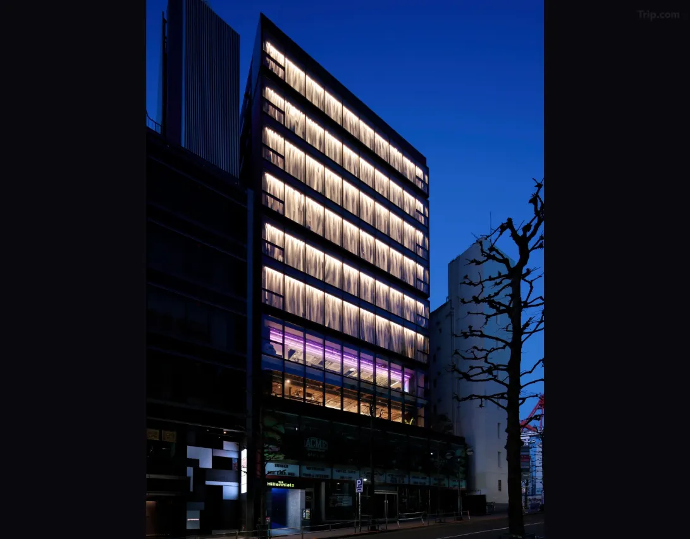
📍 Shibuya, Tokyo
The Millennials Shibuya
★ Smart Pod · Capsule/Cyberpunk · Shibuya
The future of sleep, in the heart of anime's most famous battleground. The Millennials' Smart Pods transform as you use them — rising from flat bed to lounge chair at a touch, with a built-in projector casting Tokyo's skyline across your pod ceiling. Outside: the Shibuya Scramble.
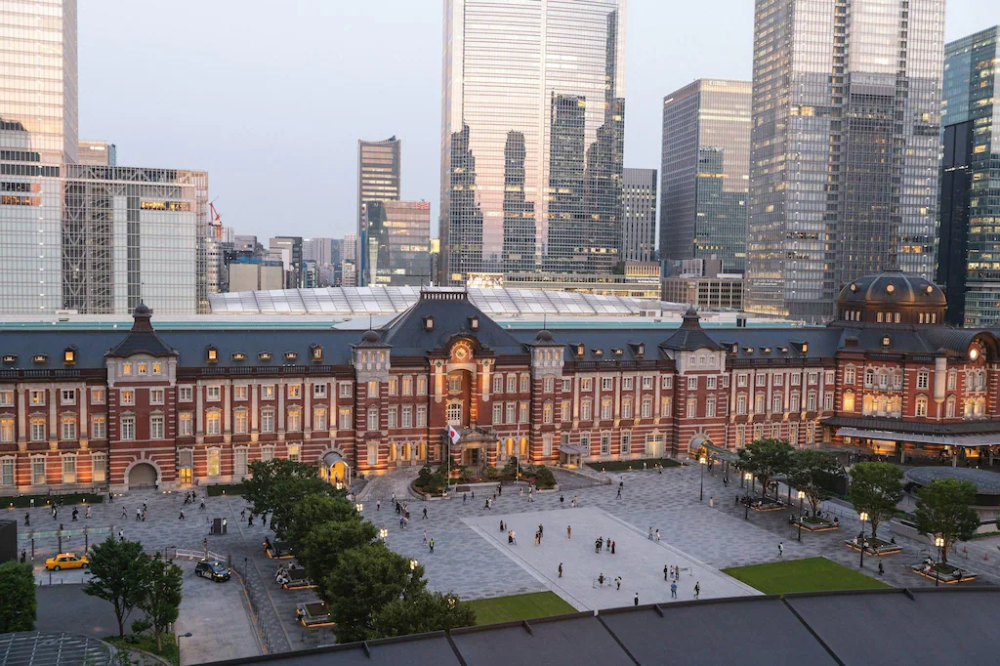
📍 Marunouchi, Tokyo
The Tokyo Station Hotel
★ Anime Character Street · Tokyo's Grand Central
Sleep inside a National Important Cultural Property. The Tokyo Station Hotel occupies the iconic red-brick 1914 station building — a structure that appears in countless anime films. Directly beneath your feet: the Tokyo Character Street, home to official shops from every major anime studio in Japan.

📍 Shinjuku, Tokyo
9h Nine Hours Woman Shinjuku
★ Women Only · Sleep Science Capsule
The capsule hotel that redefined what capsule hotels could be — for women. Nine Hours Shinjuku's cocoon-shaped pods are engineered for sleep: Gymnast Plus pillows, Nikke Shoji mattresses, no televisions by design. An optional sleep analysis report generated overnight. Five minutes from Shinjuku Sanchome.

📍 Ginzan Onsen, Yamagata
Kosekiya Annex
★ Demon Slayer · Real Swordsmith Village
A 500-year-old Taisho-era ryokan at the heart of Ginzan Onsen — the real-world Swordsmith Village from Demon Slayer. Gas lamp streets, snow-covered timber roofs, Taisho costume rental on-site, and free access to Ginzanso's outdoor baths. In winter, the resemblance to the anime is total.

📍 Nara City, Nara
Nara Hotel
★ Demon Slayer · Taisho-Era Grand Hotel
Opened in 1909, designed by the architect of Tokyo Station, and at the height of its cultural prestige during the Taisho era — the world of Demon Slayer. The pilgrimage base for Yagyu Village's Itto-seki boulder, the real-world parallel to Tanjiro's training rock. Einstein played the piano in this lobby.

📍 Sakae, Nagoya
Anshin Oyado Nagoya Sakae
★ Demon Slayer · Butterfly Mansion Base Camp
Free onsen, sauna, unlimited drinks, retro game consoles, and curry breakfast — all included. 30 minutes from Museum Meiji-mura, the real-life Butterfly Mansion from Demon Slayer. The most value-packed capsule hotel in central Japan, with a 27-hour stay window.
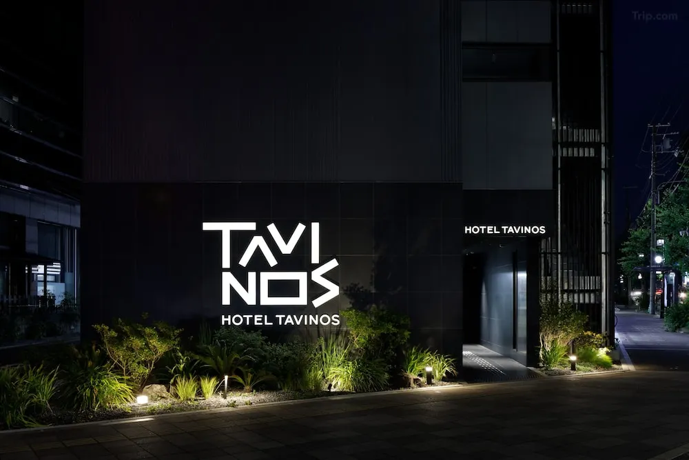
📍 Shimogyo, Kyoto
Hotel Tavinos Kyoto
★ Demon Slayer · Mugen Train Base · Manga Rooms
Three manga-designed room themes — sumo, public bath, moon-viewing — assigned at check-in as a surprise. Steps from Kiyomizu-gojo Station and 20 minutes from Kyoto Railway Museum, home of the real Class 8620 steam locomotive that became the Mugen Train.

📍 Dazaifu, Fukuoka
Hotel Cultia Dazaifu
★ Demon Slayer · Real Kamado Shrine · Kyushu
Four restored Meiji and Taisho-era buildings, one minute from Dazaifu Tenmangu. Thirty minutes from Homangu Kamado Shrine — origin of Tanjiro's name, haori, and the Hinokami Kagura. Thirteen rooms with handcrafted cypress bathtubs and exclusive after-dark shrine access for guests.
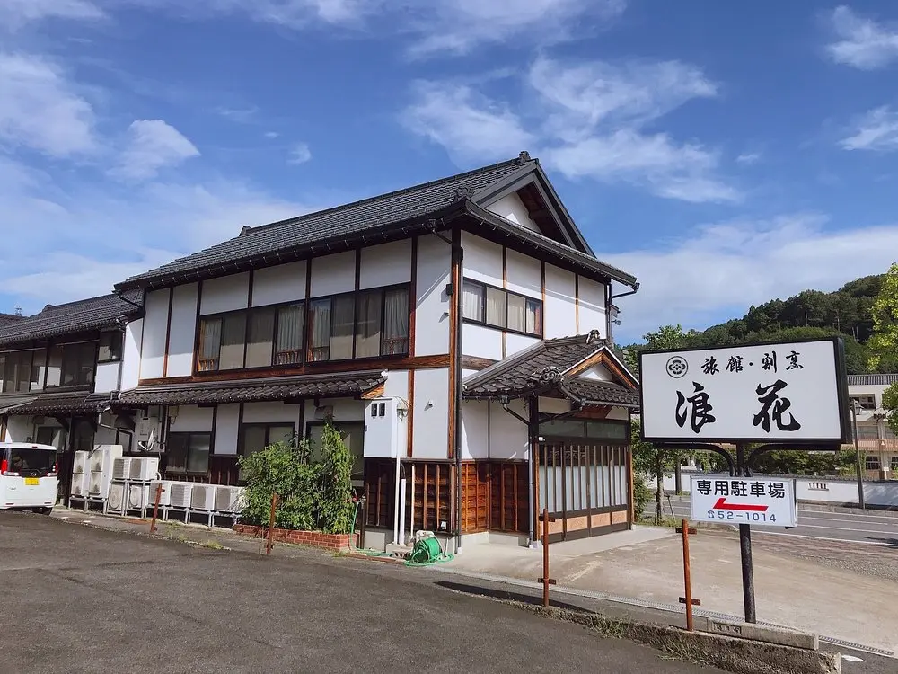
📍 Okuizumo, Shimane
Naniwa Ryokan
★ Demon Slayer · Birthplace of the Nichirin Blade
One minute from Izumo-Yokota Station in the heart of Okuizumo — Japan's ancient tatara ironworking region and the real-world origin of the Nichirin blade. A former kaiseki restaurant turned family ryokan, three minutes from the Tatara Sword Museum. From ¥5,500 per person.
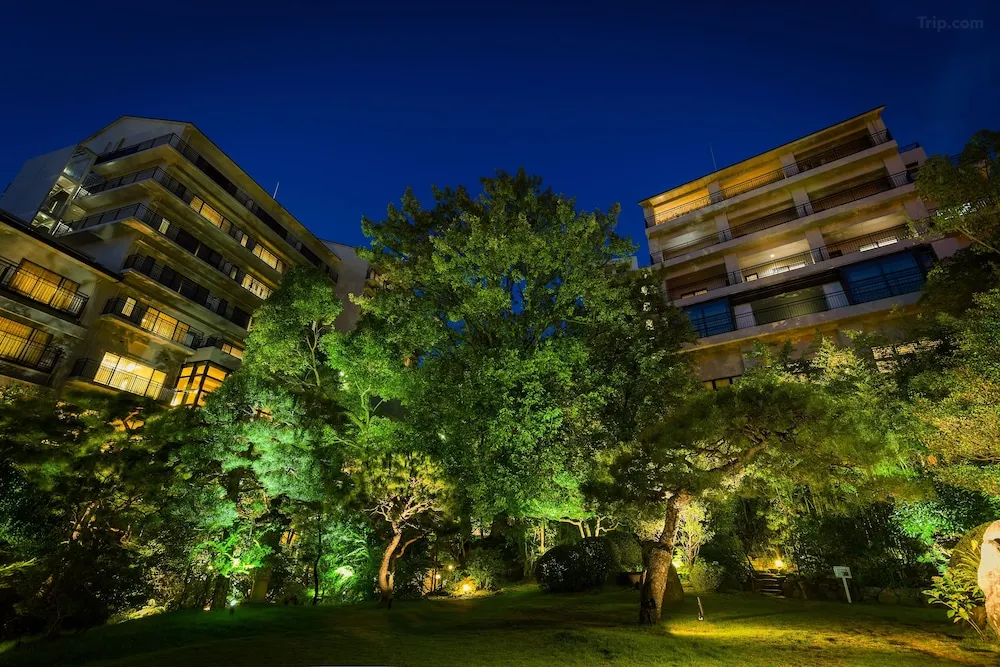
📍 Dogo Onsen, Matsuyama, Ehime
Dogo Onsen Funaya
★ Spirited Away · Four Centuries at the Original Bathhouse
Operating since 1627, Funaya is three minutes on foot from Dogo Onsen Honkan — the officially acknowledged architectural inspiration for Aburaya in Spirited Away. Wake before dawn, walk the empty arcade, and arrive at the most recognizable building in anime tourism before anyone else is there.

📍 Musashi-Koganei, Tokyo
Ryokan Niko
★ Spirited Away · The Interior World Base Camp
A family-run ryokan established in 1953, twenty minutes' walk from the Edo-Tokyo Open Air Museum — the documented source of Spirited Away's entire interior: Kamaji's boiler room, the spirit bath, Chihiro's parents' restaurant. The only traditional accommodation that directly serves this pilgrimage.
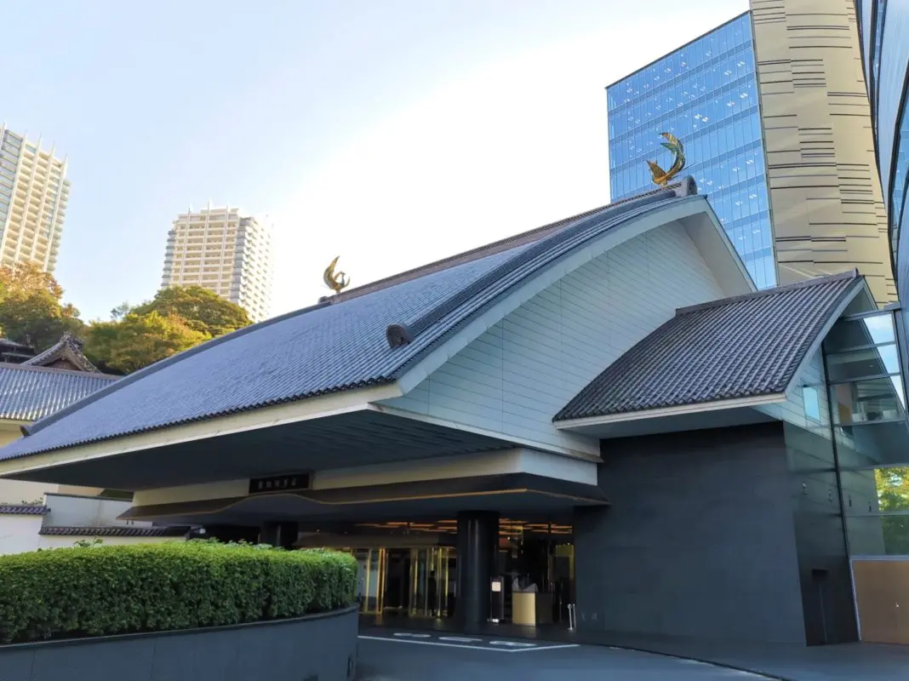
📍 Meguro, Tokyo
Hotel Gajoen Tokyo
★ Spirited Away · Palace of the Dragon God
Known since 1931 as the Palace of the Dragon God, Gajoen's 99-step Hyakudan Kaidan — a 1935 wooden staircase connecting seven lacquered banquet rooms — is one of the primary inspirations for Aburaya's grand interior. Sleep here. Walk the 99 steps during seasonal exhibitions. Eat dinner where the spirits feasted.
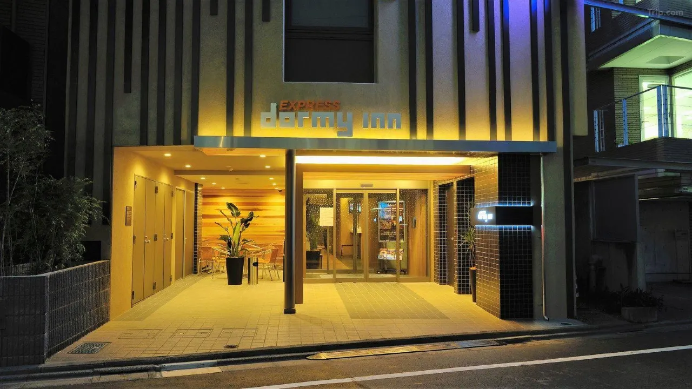
📍 Aobadai, Meguro, Tokyo
Dormy Inn Express Meguro Aobadai
★ Spirited Away · Manga Library · Sakura River
200 meters from Nakameguro's famous cherry blossom canal, next door to the Kengo Kuma–designed Starbucks Reserve Roastery, and walking distance from Hotel Gajoen Tokyo. On-site hot spring baths, manga library, and the best price-to-location ratio in the Meguro area.

📍 Shibu Onsen, Yamanouchi, Nagano
Rekishi-no-Yado Kanaguya
★ Spirited Away · The Labyrinthine Corridors
Standing since 1758, Kanaguya's four-story Saigetsuro building — glowing amber at the end of Shibu Onsen's cobblestone street — is the spatial model for Aburaya's labyrinthine interior. Request a Saigetsurou room. Use the nine-bath key. Walk the same corridors Chihiro ran through on her errands.
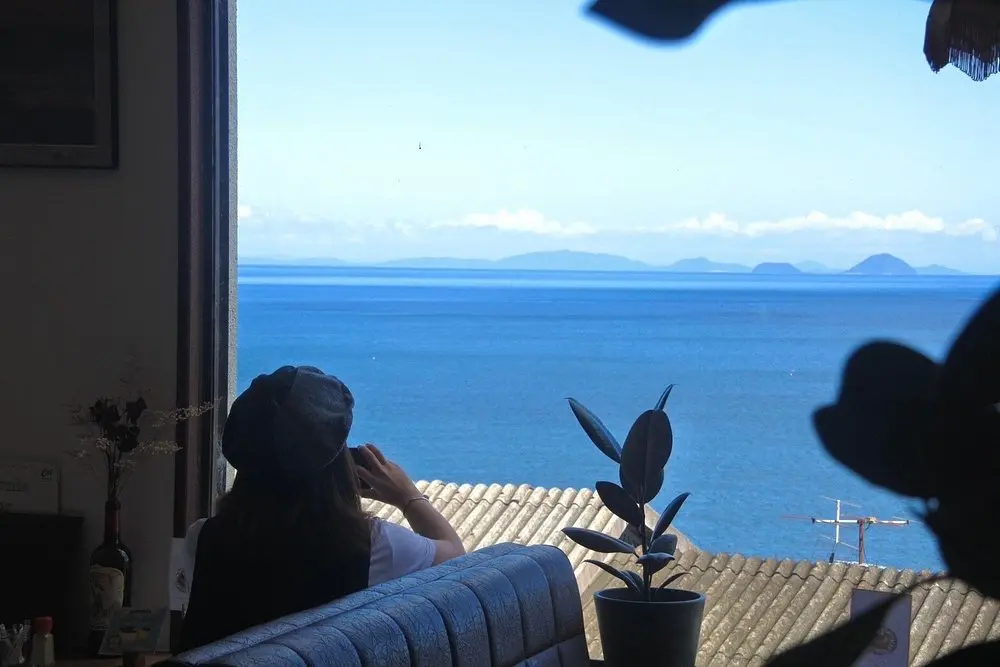
📍 Futami-cho, Iyo City, Ehime
Yado Popeye
★ Spirited Away · The Kissaten You Sleep In
A Showa-era café-guesthouse directly across from a rural Shikoku station with Seto Inland Sea views — one stop from Shimonada Station, the unmanned platform that inspired Spirited Away's sea railway scene. The Train Room looks directly onto the platform. Siphon coffee, sea air, and a room that faces the water.

📍 Nukabira Onsen, Kamishihoro, Hokkaido
Sankosou (山湖荘)
★ Spirited Away · Irori Ryokan · Lake Shikaribetsu Base
Eight rooms, a cave hot spring from a private source, and an irori hearth in every room and the dining area. The closest traditional ryokan to Lake Shikaribetsu — where submerged railway tracks disappearing into the water inspired the sea train sequence in Spirited Away. The most remote stop on the pilgrimage.

📍 Lake Shikaribetsu, Shikaoi, Hokkaido
Hotel Fusui (風水)
★ Spirited Away · The Only Hotel on the Sea Train Lake
The last hotel on the western shore of Lake Shikaribetsu — 810 meters up, Hokkaido interior, no new construction permitted by national park designation. From the outdoor bath, the submerged railway tracks that inspired Spirited Away's sea train sequence are visible in the transparent shallows below.

📍 Shirabiso Highlands, Iida City, Nagano
Hotel Amanogawa
★ Spirited Away · Milky Way · 1,918m Southern Alps
At 1,918 meters in the Southern Alps UNESCO Ecopark, above the valley where the Shimotsuki Matsuri — Miyazaki's confirmed origin for Spirited Away's bathhouse premise — is held each December. Year-round Milky Way visible to the naked eye. 360° alpine panorama. Open April–November.
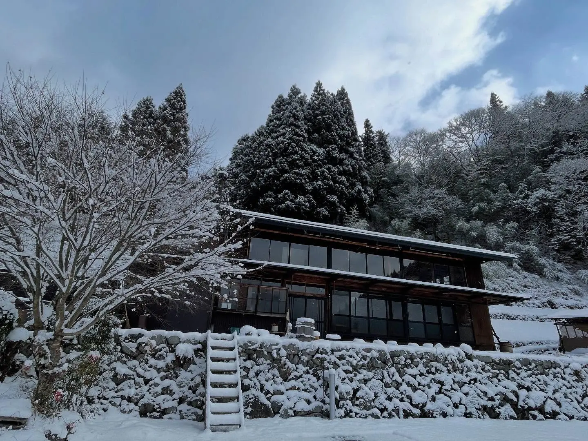
📍 Kamimura, Iida City, Nagano
Magokoro Guesthouse
★ Spirited Away · One Group · 190-Year-Old Farmhouse
A 190-year-old kominka farmhouse restored by hand, taking one group per day — the entire house is yours. In the valley of the Shimotsuki Matsuri, the winter festival Miyazaki confirmed as Spirited Away's origin. Dinner cooked over an irori hearth: wild boar, river fish, mountain vegetables from the surrounding fields.
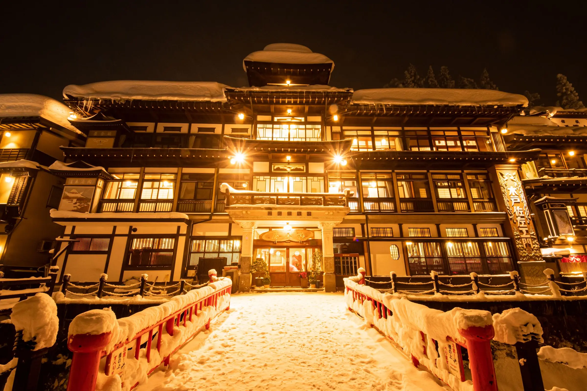
📍 Ginzan Onsen, Obanazawa, Yamagata
Notoya Ryokan
★ Spirited Away · Demon Slayer · Taisho-Era Icon
The four-story Taisho-era wooden facade at the center of Ginzan Onsen's gas-lit riverfront — named in Spirited Away's Wikipedia article as a bathhouse inspiration, and a twin pilgrimage with Kosekiya Annex for Demon Slayer's Swordsmith Village. In winter snow, with gas lamps burning, the resemblance to both anime is total.

📍 Shibuya, Tokyo
Shibuya Hotel En
★ Manga Floor · 9 Japanese Cultural Themes
Each of the nine floors is a different world — the 2nd floor is the manga floor, higher floors take on ukiyo-e, traditional Kyomachiya, and Hokusai themes. Opening the door from the motion of Shibuya's streets into the stillness of a room built from traditional Japanese materials is the hotel's singular premise.

📍 Hamamatsucho, Minato, Tokyo
Hotel Tavinos Hamamatsucho
★ Manga Rooms · Tokyo Bay Views · Haneda Access
Three room types — Sunny-side Up, Toast, and Coffee — each a manga panel sequence from wall to ceiling. Upper floors look directly across to Odaiba and the bay. Eight minutes from Hamamatsucho Station, direct monorail to Haneda Airport. The most accessible manga base camp in central Tokyo.

📍 Hibiya, Chiyoda, Tokyo
Imperial Hotel Tokyo
★ Death Note · Hibiya Park · NPA Kasumigaseki
Since 1890, Japan's grande dame of hospitality. The Imperial sits at Hibiya Park — where Light writes Naomi Misora's name in Death Note, Episode 8 — and within one stop of Kasumigaseki, home of the NPA headquarters central to the Kira investigation. The most storied address in Tokyo, and the luxury anchor for the Death Note pilgrimage.
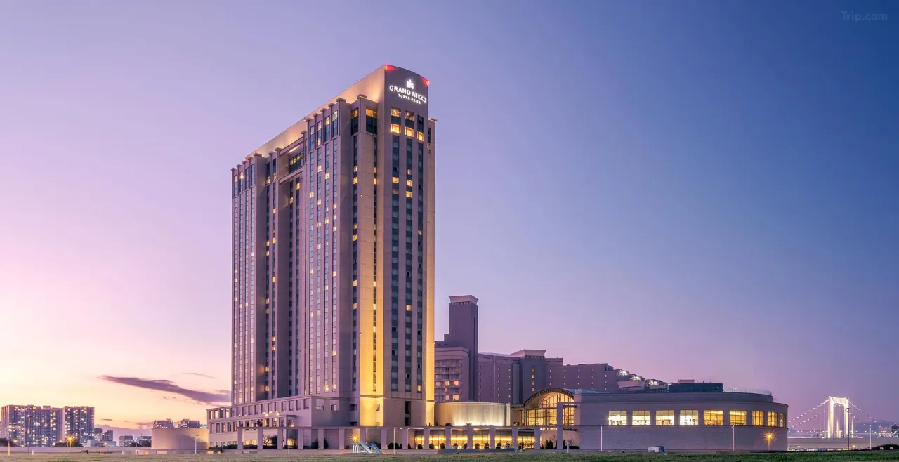
📍 Daiba, Minato, Tokyo
Grand Nikko Tokyo Daiba
★ Death Note · Sakura TV · Gundam · Tokyo Bay
900 feet from the Fuji TV building — the real-world Sakura TV from Death Note. The same bay, the same sphere, the same establishing shot the background artists drew from this exact angle. Once home to Japan's most-coveted Gundam hotel suite. The only address for the Odaiba chapter of the Death Note pilgrimage.

📍 Minatomirai, Yokohama
Yokohama Minatomirai Manyo-Club
★ Death Note · Manga Library · Onsen · Cosmo Wheel
Hot spring water trucked daily from Atami and Yugawara. A manga reading room. A 50-meter rooftop footbath with the Cosmo Clock 21 Ferris wheel directly ahead. Five minutes from Daikoku Pier — the finale location of Death Note. This is where the Yokohama pilgrimage sleeps and soaks.

📍 Ueno, Taito, Tokyo
Capsule Net Gran Ueno
★ 30,000 Manga Volumes · Public Bath · Death Note Base
Thirty thousand manga volumes. Not a shelf — a library. Free curry rice, free coffee, free public bath and sauna, free amenity lending, and a 7-Eleven connected to the ground floor. Three minutes from Ueno Station, one stop from Akihabara. The best-value manga experience in Tokyo, by a significant margin.